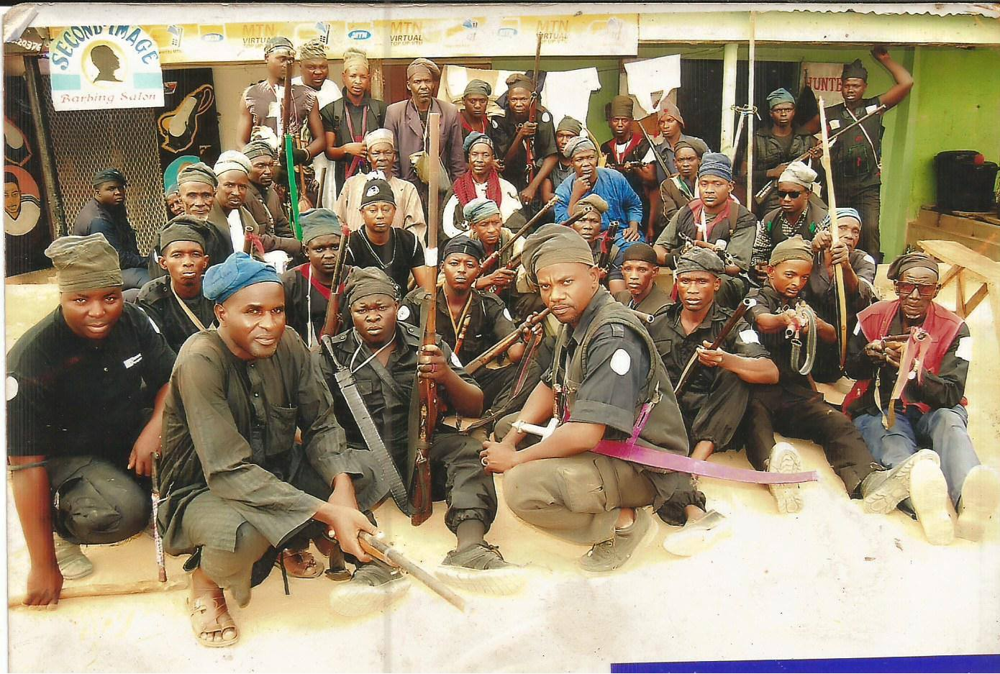
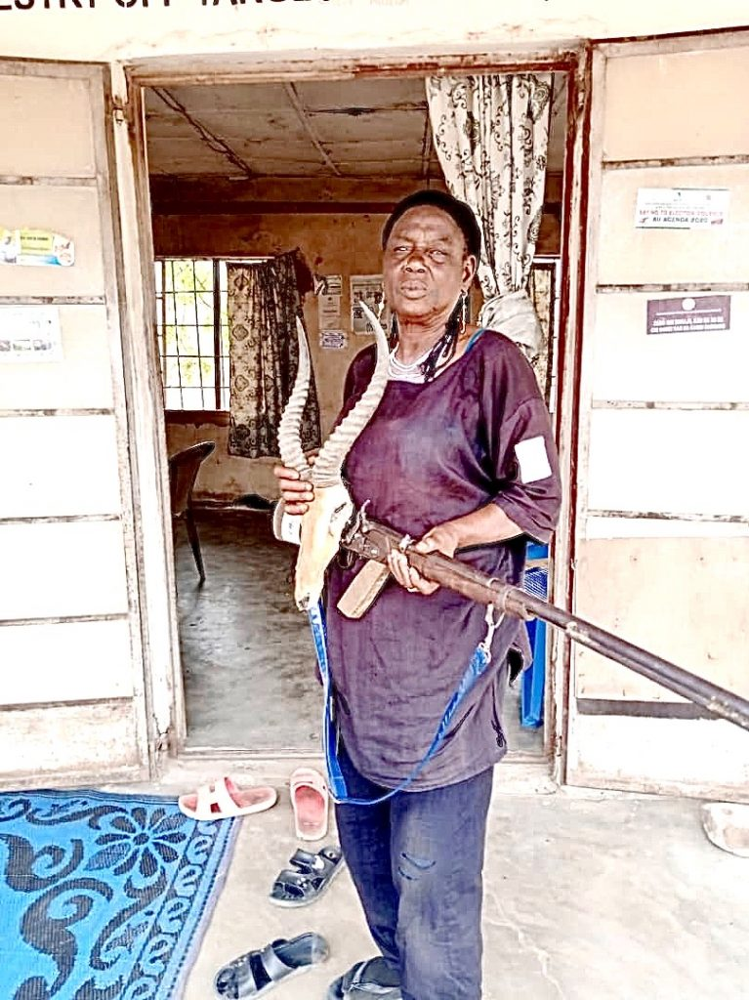

The despondent group wasn’t worried about the spreading pandemic that has paralyzed the metropolis of Lagos hundreds of miles to the west. Fifty-five-year-old Halima Baba Bukar was upset that her antique single-shot antelope rifle would be silent.
The gloom around the teapot March 26 was about the government-commanded cancellation of the consecration of the hunters, an annual days-long gathering that draws thousands who hunt monkeys and lions–and sometimes Boko Haram terrorists.
“We were set for our yearly consecration ritual and renewal of our vows when our overall boss of all hunters in northeast Nigeria ordered the event indefinitely postponed because of the government’s prohibition on gatherings larger than 50,” Bukar told Zenger News, standing with her precious gun in the door jamb of the Adamawa State headquarters of the Hunters Association of Nigeria.
Halima Baba Bukar, nicknamed the huntress of Yola, stands with her antique single-shot antelope rifle. (Tom Garba/Zenger)
Wildlife aren’t Bukar’s only quarry. She has led Nigerian army units into the forest in search-and-destroy missions against Islamist terrorist insurgents. The office where she works is in Yola, Adamawa’s capital. It’s home to the vast Sambisa forest where thousands of Boko Haram militants have operated from concealed military bases for a decade.
Alhaji Mohammadu Usman Tola, the hunting association’s chairman, gave the order to scrap this year’s consecration ritual despite the lack of any coronavirus cases in Adamawa.
As Africa’s most populous and wealthiest country, though, Nigeria is a bellwether for all of West Africa. Members of Nigerian President Muhammadu Buhari’s cabinet have tested positive. The governors of Bauchi and Kaduna states are self-quarantining after contracting the viral infection. And cases in the teeming metropolises of Lagos and Abuja comprise most of the country’s 190 confirmed diagnoses.
But to the hunters in Adamawa sipping tea and sharing war stories, their sick countrymen might have been a world away.